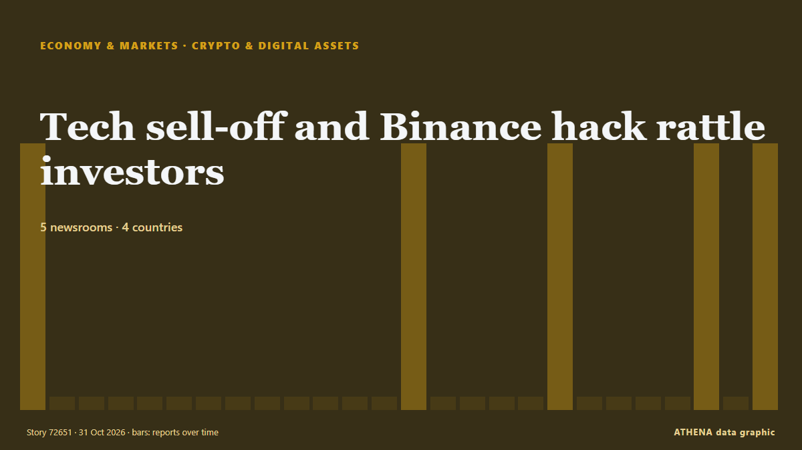

Οικονομία, Χρηματοοικονομικά & Αγορές
Οι τίτλοι των ειδήσεων παρουσιάζονται στα αγγλικά, όπως δημοσιεύτηκαν.
Παρακολούθηση αγορών - επίσημα στοιχεία
Προς τα πού κινούνται τα επίσημα μεγέθη των αγορών - άνοδος, πτώση ή σταθερότητα - με την τελευταία επίσημη τιμή και την ημερομηνία της, και οι ειδήσεις αγορών που επιβεβαίωσε το ATHENA. Επίσημα στοιχεία, όχι τιμές σε πραγματικό χρόνο.
Ενέργεια
| 1 ημέρα | 1 εβδομάδα | 1 μήνας | Επίσημη τιμή | |
|---|---|---|---|---|
| Πετρέλαιο Brent | ▼ | ▲ | ▲ | $123,10/bblΕπίσημα στοιχεία της 27 Οκτ 2026 |
| Πετρέλαιο WTI | ▼ | ▼ | ▲ | $103,37/bblΕπίσημα στοιχεία της 27 Οκτ 2026 |
| Φυσικό αέριο ΗΠΑ (Henry Hub) | ▲ | ▼ | ▼ | Ασυνήθιστη κίνηση $2,76/MMBtuΕπίσημα στοιχεία της 27 Οκτ 2026 |
| Ευρωπαϊκό φυσικό αέριο (1 μήνας · 3 μήνες · 12 μήνες)(1Μ · 3Μ · 12Μ) | ▲ | ▲ | ▲ | $25,49/MMBtuΕπίσημα στοιχεία της 1 Σεπ 2026 |
| Άνθρακας (Αυστραλία) (1 μήνας · 3 μήνες · 12 μήνες)(1Μ · 3Μ · 12Μ) | ▲ | ▲ | ▲ | $153,84/tΕπίσημα στοιχεία της 1 Σεπ 2026 |
Τρόφιμα
| 1 μήνας | 3 μήνες | 12 μήνες | Επίσημη τιμή | |
|---|---|---|---|---|
| Σιτάρι | ▲ | ▲ | ▲ | $246,85/tΕπίσημα στοιχεία της 1 Σεπ 2026 |
Χρηματιστήρια ΗΠΑ
| 1 ημέρα | 1 εβδομάδα | 1 μήνας | Επίσημη τιμή | |
|---|---|---|---|---|
| S&P 500 | ▼ | ▲ | ▲ | Μόνο κατεύθυνση (δείκτης © Cboe)Επίσημα στοιχεία της 29 Οκτ 2026 |
| Nasdaq Composite | ▼ | ▲ | ▼ | Μόνο κατεύθυνση (δείκτης © Cboe)Επίσημα στοιχεία της 29 Οκτ 2026 |
Επιτόκια, κίνδυνος και δολάριο
| 1 ημέρα | 1 εβδομάδα | 1 μήνας | Επίσημη τιμή | |
|---|---|---|---|---|
| Απόδοση 10ετούς ομολόγου ΗΠΑ | ▼ | ▲ | ▼ | 4,98 %Επίσημα στοιχεία της 29 Οκτ 2026 |
| Μεταβλητότητα αγοράς (VIX) | ▲ | ▼ | ▲ | Μόνο κατεύθυνση (δείκτης © Cboe)Επίσημα στοιχεία της 29 Οκτ 2026 |
| Δολάριο ΗΠΑ, ευρύς δείκτης | ▬ | ▬ | ▲ | 121,32Επίσημα στοιχεία της 23 Οκτ 2026 |
Το ευρώ έναντι άλλων νομισμάτων
| 1 ημέρα | 1 εβδομάδα | 1 μήνας | Επίσημη τιμή | |
|---|---|---|---|---|
| EUR/USD | ▲ | ▼ | ▼ | 1,1172 USDΕπίσημα στοιχεία της 30 Οκτ 2026 |
| EUR/GBP | ▼ | ▼ | ▼ | 0,8338 GBPΕπίσημα στοιχεία της 30 Οκτ 2026 |
| EUR/CHF | ▼ | ▼ | ▼ | 0,9194 CHFΕπίσημα στοιχεία της 30 Οκτ 2026 |
| EUR/JPY | ▼ | ▲ | ▼ | 175,68 JPYΕπίσημα στοιχεία της 30 Οκτ 2026 |
| EUR/CNY | ▲ | ▼ | ▼ | 7,4326 CNYΕπίσημα στοιχεία της 30 Οκτ 2026 |
| EUR/TRY | ▲ | ▲ | ▲ | 55,801 TRYΕπίσημα στοιχεία της 30 Οκτ 2026 |
| EUR/NOK | ▼ | ▼ | ▼ | 10,3120 NOKΕπίσημα στοιχεία της 30 Οκτ 2026 |
Πηγές: Υπηρεσία Ενεργειακών Πληροφοριών ΗΠΑ (πετρέλαιο, φυσικό αέριο ΗΠΑ), ΔΝΤ (ευρωπαϊκό φυσικό αέριο, άνθρακας, σιτάρι), Υπουργείο Οικονομικών και Federal Reserve των ΗΠΑ (απόδοση 10ετούς, δείκτης δολαρίου) και Cboe (VIX), S&P Dow Jones Indices (S&P 500), Nasdaq (Nasdaq Composite), μέσω FRED (Federal Reserve Bank of St. Louis)· ισοτιμίες αναφοράς του ευρώ © Ευρωπαϊκή Κεντρική Τράπεζα. Οι τιμές είναι οι τελευταίες επίσημες, με την ημερομηνία τους - όχι τιμές σε πραγματικό χρόνο. Τις κατευθύνσεις τις υπολογίζει το ATHENA.
Κρυπτονομίσματα, ETF και μετοχές στις ειδήσεις
- Inside World's Largest Crypto Heist: How Binance's $6.3 Billion Was Stolen Κίνδυνος 1.8 31 Οκτ
- Nasdaq faces $2 trillion wipeout in October as AI spending fears deepen Κίνδυνος 1.6 31 Οκτ
- Nvidia weighs credit support for Nscale as data center, IPO face pressure Κίνδυνος 0.0 31 Οκτ
- Jaishankar meets US Secretary of State Marco Rubio on sidelines of G20: 'Took stock of our bilateral cooperation’ Κίνδυνος 3.4 31 Οκτ
- Bitcoin price drops to $78,000 Κίνδυνος 1.1 31 Οκτ
- “Bitcoin”in qiyməti 78 min dollara kimi enib Κίνδυνος 0.0 31 Οκτ
- Crypto exchanges call for quick moves to bolster defences after Binance heist Κίνδυνος 1.1 31 Οκτ
- As it happened: Binance’s record $6.3B crypto hack Κίνδυνος 3.3 31 Οκτ
- S&P Global revises Meta’s outlook to ‘negative’ on AI spending Κίνδυνος 1.7 31 Οκτ
- The sell-off for tech stocks worsens and overwhelms Wall Street Κίνδυνος 5.3 31 Οκτ

Κρυπτονομίσματα & ψηφιακά στοιχείαTech sell-off and Binance hack rattle investors
Amazon and Intel worsen the sell-off with disappointing earnings releases. από CNBC World
| 18 Οκτ | 10 |
|---|---|
| 19 Οκτ | 39 |
| 20 Οκτ | 9 |
| 21 Οκτ | 34 |
| 22 Οκτ | 82 |
| 23 Οκτ | 59 |
| 24 Οκτ | 29 |
| 25 Οκτ | 32 |
| 26 Οκτ | 123 |
| 27 Οκτ | 132 |
| 28 Οκτ | 124 |
| 29 Οκτ | 90 |
| 30 Οκτ | 97 |
| 31 Οκτ | 10 |
Crypto exchanges call for quick moves to bolster defences after Binance heist
A record US$6.3 billion hack of Binance exposes its vulnerability. από The Business Times
As it happened: Binance’s record $6.3B crypto hack
How Binance’s $6.3 billion hack unfolded, from the first onchain alerts to $3 billion in frozen funds and a widening security investigation. από Cointelegraph
S&P Global revises Meta’s outlook to ‘negative’ on AI spending
S&P Global Ratings on Friday revised its outlook on Meta Platforms (META.O), opens new tab to “negative” from “stable”, citing significant uncertainty around the social media giant’s capital spending… από FBC News
Bank of Japan's Transactions with the Government (Sept.)
Although core consumer inflation occasionally exceeded the target in the early 2020s, Friday marked the first time the Bank of Japan confirmed that its long-term inflation goal had been achieved. από Free Malaysia Today
Minutes of the monetary policy meeting on 16 June 2026
Associated Press Of Pakistan State Bank Governor Jameel Ahmad announces the monetary policy decision at a press conference. από APP (Associated Press of Pakistan)
Evening News Brief October 30: Uttarakhand chopper crash, mega Binance crypto heist and more top stories
Fed holds main interest rate steady despite accelerating inflation
Two policymakers on the Federal Open Market Committee dissented in favor of raising the federal funds rate by 0.25 percentage point. από Supply Chain Dive
Dakar Rally 2027 will be held in Portugal and Morocco, say organisers
The Dakar Rally was moved from Saudi Arabia to Portugal and Morocco over security concerns stemming from Houthi attacks and the war in the Middle East. από Free Malaysia Today
Robert Abela Thanks Christine Lagarde For Her Leadership As ECB President
European Central Bank President Christine Lagarde will step down on Feb. από CNBC Economy
Unilever hiking prices as commodity costs soar amid Iran conflict
The consumer goods firm revealed underlying sales grew by 5.2% in the three months to September 30, of which 2.3% was due to higher prices. από Evening Standard (London)
Sri Lanka’s inflation climbs to 8.3%
Inflation in Sri Lanka increased to 8.3% in October, up from 8.0% recorded in September, according to the Colombo Consumer Price Index (CCPI), the Department of Census and Statistics said. από Daily Mirror
French Economy Shrinks 0.1% as Exports Fall
France's economy shrank 0.1% from July to September as exports fell 1.7%, Insee said, while dockworkers began a 24-hour national strike. από The Rio Times
PAG to buy 51% stake in Evergrande Property Services for $514 million
Asia-focused investment firm PAG will acquire a 51% stake in Evergrande Property Services Group , a unit of debt-laden developer China Evergrande Group, for HK$4.03 billion ($514 million), the two… από Business Recorder
Jio’s blockbuster debut puts valuation, earnings in focus
India’s second-most valuable listed company now needs to show investors the money. από The Business Times
Yen steady before BOJ, AI jitters drive Treasury rally, weigh on dollar
HONG KONG: The yen was steady on Friday ahead of the Bank of Japan’s policy decision, while the dollar tracked Treasury yields lower as a fresh wave of selling in AI shares triggered a flight to… από Business Recorder
Shares in Google owner Alphabet plummet on profit miss, ad slowdown
WASHINGTON: Shares in Google parent Alphabet fell more than 10 per cent in after-hours trading on Wednesday as the company reported lower-than-expected profit and a slowdown in its advertising… από New Straits Times
Philippines may use more tools to stem peso slide, analysts say
By Ditas B. Lopez, Bloomberg The Philippine peso’s nearly 8% slide against the dollar this year may prompt… από BusinessWorld
Sonia Gandhi makes Instagram debut, shares first look of upcoming memoir ‘Belonging: A Journey Of Love’
In her first post, Sonia Gandhi described the memoir as a story of “love, duty, loss and finding a place to belong” από Hindustan Times
Seoul stocks open lower on Wall Street losses, AI concerns
South Korean stocks opened lower Friday, tracking overnight losses on Wall Street, as renewed concerns over the sustainability of the artificial intelligence (AI) boom weighed on investor sentiment. από Korea Herald
Pentagon’s US$1.5 Trillion Budget Explained
The Pentagon wants US$1.5 trillion for fiscal 2027, but US$350 billion hinges on a party-line vote. από The Rio Times
(2nd LD) Sept. industrial output growth hits 15-yr high on chips; retail sales, investment also up
SEOUL, Oct. 30 (Yonhap) -- South Korea's industrial output expanded in September... από Yonhap (English)
US economy posts strong growth, inflation stubbornly high in challenge to Trump
WASHINGTON, United States (AFP) — The United States posted strong economic growth in the third quarter, but the Fed's preferred inflation gauge also accelerated, the Commerce Department said on… από Jamaica Observer
US national debt hits record high of over $40.5 trillion
The debt has increased by $20 trillion in less than a decade. από TASS (English)
US senator calls for accountability over Israel’s killing of 9 Americans in occupied West Bank
‘Nine American citizens dead. No accountability,’ says Chris Van Hollen. από Anadolu Agency (English)
Asian shares fall after Alphabet earnings miss forecasts
MSCI's broadest index of Asia-Pacific shares outside Japan dropped 0.7%, while Japan's Nikkei trimmed gains to be up 0.3%. από Free Malaysia Today
Venezuelan leader demands Bank of England return gold
CARACAS, Venezuela (AFP) — Venezuelan interim president Delcy Rodriguez demanded Wednesday the return of her country's gold reserves held at the Bank of England, where they were frozen more than six… από Jamaica Observer
Revolut takes on high street banks with launch of personal loans in UK
The unsecured loans, ranging between £2,000 and £25,000, offer ‘near-instant’ funds after approval. από Evening Standard (London)
UN probe accuses Israel of 'extermination' in West Bank
GENEVA, Switzerland — Israel has committed the crime against humanity of "extermination" in the West Bank, while continuing to commit "genocide" against Palestinians in the Gaza Strip, United… από The Korea Times
Budget 2026: John Healey announces £100 energy payment for households, minimum wage rise, and £7.5m for AI and cyber in Belfast
More than a million low-paid workers are set for a pay boost Chancellor John Healey is poised to announce. από WalesOnline
Dangote Refinery’s IPO closes with investors from 120 countries
"This is a historic achievement for Africa. από Vanguard
Election uncertainty rocks markets as Tel Aviv stocks tumble and shekel reverses gains
The TA-35 and TA-125 plunged as election uncertainty erased earlier optimism, while the shekel weakened and government bond yields climbed. από The Jerusalem Post
Budget 2026: How Chancellor John Healey will hammer the City
Chancellor has the Square Mile firmly in his sights in today’s Budget. από Evening Standard (London)